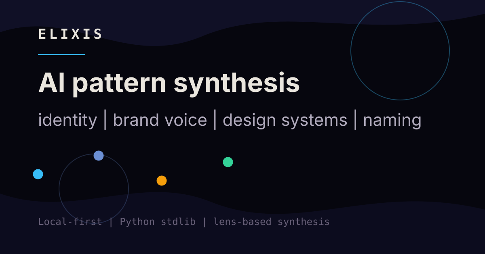

Identity
Generate SOUL.md-compatible identity documents for OpenClaw, Soul Spec, and agent systems that read markdown personas.
Elixis turns messy references, influences, values, aesthetics, constraints, people, works, and places into a reusable pattern graph. SOUL.md is one compatibility lens, not the whole product.

The same reference set can become an identity document, brand voice guide, design-system direction, naming research, or translation risk check.
Generate SOUL.md-compatible identity documents for OpenClaw, Soul Spec, and agent systems that read markdown personas.
Turn references into voice principles, positioning language, tone constraints, and usable brand vocabulary.
Resolve patterns into design direction, tokens, interface principles, and style constraints for product work.
Research names, generate semantically aligned variants, and check cross-language risk before committing to a direction.
Expose synthesis tools directly to MCP-compatible AI assistants through a zero-dependency stdio server.
Run with Python 3.12+, Ollama or OpenAI-compatible APIs, and stdlib-only application code.